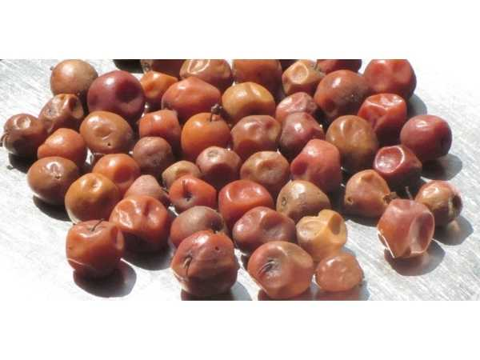

Ziziphus mauritiana 'Apple Ber Red'
Common Names: Apple Ber Red, Red Indian Jujube, Thai Apple Ber
Local Name: Ilanthai (Tamil), Ber / Bor (Hindi)
Family: Rhamnaceae
Origin: South and Southeast Asia; cultivar selected in Thailand/India
Plant Type: Perennial deciduous to semi-evergreen tree
Variety: Apple Ber Red — large-fruited cultivar with red-blushed skin
Average Lifespan: 25–40 years
| Growth Habit | Small to medium spreading tree with drooping branches; thorny |
| Plant Size | 3–8 meters tall; canopy spread 4–6 meters |
| Leaves | Alternate, ovate to elliptic, 2–7 cm long, glossy green above, pale and hairy beneath; 3 prominent veins |
| Flowers | Small, greenish-yellow, 5-petaled, 4–5 mm across, in axillary clusters |
| Flower Characteristics | Inconspicuous but fragrant; rich in nectar; attract bees and flies |
| Fruit | Large, round to oval, 4–7 cm diameter, crisp white flesh, apple-like texture; much larger than wild ber |
| Fruit Color | Green turning red to maroon-red when ripe; glossy skin |
| Seed Characteristics | Single hard stone (drupe) with 1–2 seeds inside |
| Root System | Deep taproot with extensive lateral roots; excellent drought adaptation |
| Climate | Tropical to arid; extremely heat and drought tolerant |
| Temperature Range | 20–40°C ideal; tolerates up to 48°C; frost-sensitive when young |
| Rainfall Requirement | 300–1000 mm annually; thrives in semi-arid conditions |
| Soil Type | Adaptable; grows in sandy, loamy, and even saline soils |
| Soil pH Preference | 5.5–8.5 (very adaptable) |
| Sun Requirement | Full sun (8+ hours daily) |
| Spacing | 5–6 meters between trees |
| Irrigation Method | Drip irrigation preferred; flood irrigation also works |
| Water Requirement | Low to moderate; highly drought-tolerant once established |
| Can it Grow in Pots? | Yes, in large pots (30+ liters); prune to maintain compact size |
| Fertilizer Schedule | 3 times per year — monsoon onset, flowering, and post-harvest |
| Recommended Organic Fertilizers | FYM (10–20 kg/tree), vermicompost, neem cake, bone meal |
| Pesticide Frequency | 2–3 sprays during fruiting season |
| Recommended Organic Pesticides | Neem oil, garlic extract, pheromone traps for fruit fly |
| Mulching Practice | Organic mulch to conserve soil moisture in dry regions |
| Training System | Open centre or modified leader; annual heading back for compact growth |
| Pruning Time | May–June (before monsoon); heavy annual pruning essential |
| How to Prune | Head back previous season's growth to 10–15 cm stubs; fruits on new growth |
| Common Pests | Fruit fly, bark-eating caterpillar, leaf webber, ber butterfly |
| Common Diseases | Powdery mildew, leaf spot, fruit rot, sooty mold |
| Disease Prevention & Remedies | Sulphur dust for powdery mildew, proper spacing, remove infected fruit, copper fungicides |
| Flowering Months | August–October |
| Fruiting Season | December–March; 90–120 days after flowering |
| Days to Harvest | 90–120 days from flowering |
| Harvest Indicators | Fruit turns from green to red/maroon; skin becomes glossy; flesh is crisp and sweet |
| Average Yield per Plant | 40–80 kg per tree per year (mature, well-managed) |
| Pollination Type | Cross-pollination by insects (primarily bees and flies) |
| Pollination Notes | Plant multiple varieties for better fruit set; honeybees are key pollinators |
| Pollination Details | Protandrous flowers (male phase first); cross-pollination essential for good fruit set |
| Propagation by Seeds | Seeds germinate in 3–6 weeks; used for rootstock production only |
| Propagation by Cuttings | Difficult from cuttings; air layering possible but not preferred |
| Propagation by Grafting | T-budding or patch budding on wild Ziziphus rootstock (preferred commercial method) |
| Water Usage | Very low; one of the most drought-tolerant fruit trees |
| Soil Conservation Practices | Deep roots stabilise soil; thrives in degraded and marginal lands |
| Organic Practices Used | Minimal inputs needed; well-suited for organic farming |
| Companion Plants | Legumes, vegetables, and short-duration crops as intercrops |
| Biodiversity Benefits | Flowers support bee populations; fruit eaten by birds; provides shade in arid regions |
| Commercial Production Regions | Rajasthan, Gujarat, Maharashtra, Madhya Pradesh, Telangana, Tamil Nadu |
| Market Uses | Fresh fruit, dried ber, candy, murabba |
| Processing Uses | Dried fruit, ber candy, pickle, powder, juice |
| Market Value (Approx.) | ₹40–100 per kg (India); premium for large red variety |
| Symbolism | Sacred in Hinduism; associated with Lord Shiva; ber leaves used in worship |
| Traditional Uses | Fruit eaten fresh and dried; bark and leaves used in Ayurvedic medicine for digestive and skin ailments |
| Calories | 79 kcal per 100g |
| Dietary Fiber | 0.6 g per 100g |
| Vitamin C | 69 mg per 100g (115% DV) |
| Vitamin A | 40 IU per 100g |
| Iron | 0.5 mg per 100g |
| Potassium | 250 mg per 100g |
| Antioxidants | Rich in vitamin C, phenolics, flavonoids, and triterpenic acids |
| Other Key Nutrients | Calcium, phosphorus, carotene, thiamine |
| Anxiety & Sleep | Jujube seed extract (Ziziphus jujuba) traditionally used as a sedative; related species |
| Immune Support | Very high vitamin C content boosts immunity significantly |
| Anti-inflammatory Properties | Bark and leaf extracts show anti-inflammatory and analgesic properties |
| Heart Health | Potassium and antioxidants support cardiovascular health |
| Digestive Health | Fruit aids digestion; bark decoction used for diarrhoea in Ayurveda |
Disclaimer: Information provided is for educational purposes only and not a substitute for medical advice.
Add your field observations here.